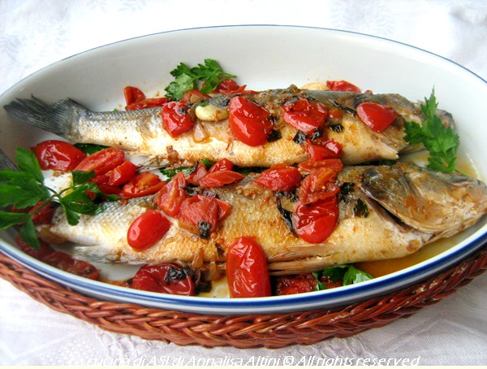
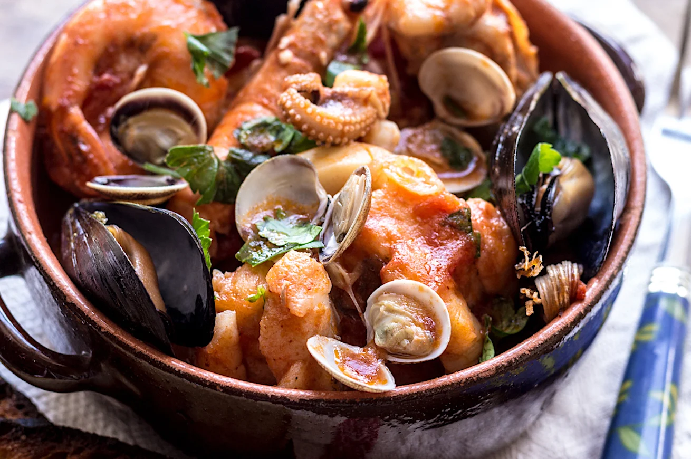
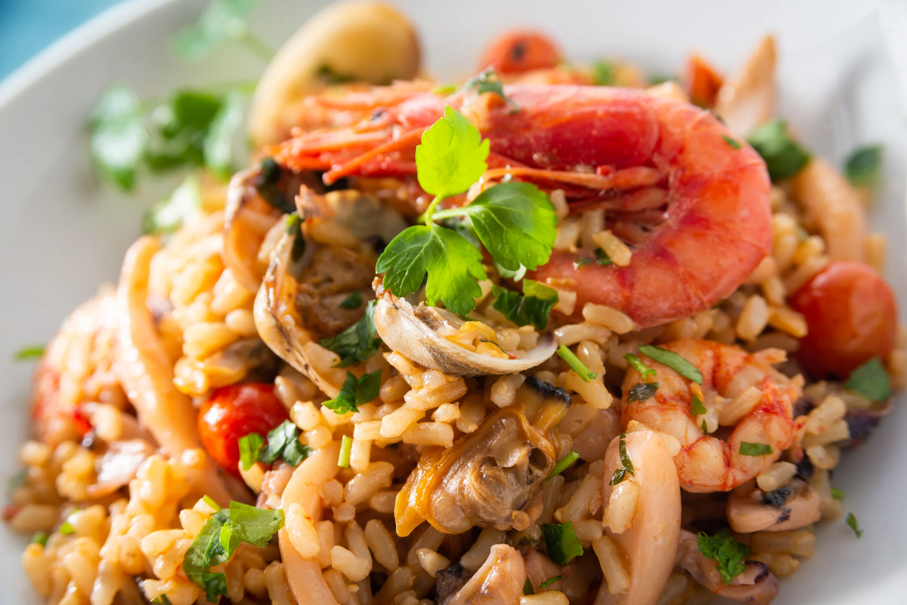

Pasta con le sarde
Ricetta tipica siciliana.

Branzino all'acqua pazza
Piatto tipico della Campania.

Cacciucco alla Livornese
Ricetta tipica della Toscana.

Frittura di Paranza
Piatto tipico meridionale.

Risotto ai frutti di mare
Ricetta tipica del sud Italia.

Spaghetti con le vongole
Piatto tipico napoletano.